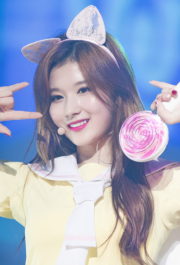

사나(본명: 미나토자키 사나, 일본어: 湊﨑 紗夏みなとざき さな, 1996년 12월 29일 ~ )는 대한민국에서 활동하는 일본 출신의 가수로, JYP 엔터테인먼트 소속 여성그룹 트와이스의 서브보컬을 맡고 있다.
기본 정보
| 본명 | 미나토자키 사나 (湊﨑 紗夏) |
|---|---|
| 출생 | 1996년 12월 29일 (21세) |
| 국적 | 일본 |
| 지역 | 오사카부 오사카시 덴노지구 |
| 직업 | 가수 |
| 장르 | K-pop, 댄스 팝 |
| 활동 시기 | 2014년 ~ 현재 |
| 가족 | 엄마,아빠,할머니 |
| 소속사 | JYP 엔터테인먼트 |
| 소속 그룹 | 트와이스 |
| 웹사이트 | JYP |
생애
사나는 1996년 12월 29일 일본 오사카부에서 태어났다. JYP에 들어오기 전 2009년 말에서 2012년 초까지 EXILE의 댄스 아카데미 EXPG의 오사카 지점에서 춤을 배웠었고, JYP에 스카우트 되어 한국으로 건너왔다.
JYP 엔터테인먼트 소속으로 2015년 10월 걸그룹 트와이스의 9명 멤버 중 한 명으로 데뷔했다.
트와이스의 노래 《Cheer Up》에서 "친구를 만나느라 Shy Shy Shy"의 'Shy Shy Shy'(샤이 샤이 샤이)를 '샤샤샤'로 변형하여 큰 인기를 얻었다. 이후에 이 '샤샤샤'라는 멘트는 많은 패러디를 낳았다.